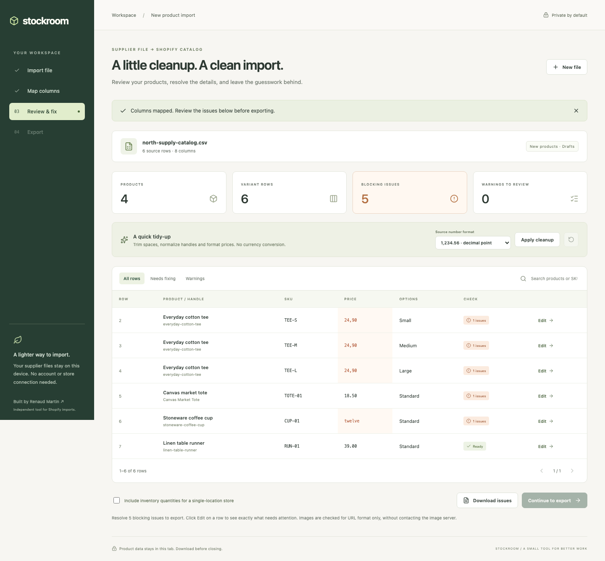

01 / E-COMMERCE OPERATIONSLATEST BUILD
Stockroom
Messy supplier data.
A cleaner way into Shopify.
Map supplier columns, fix prices and product variants, then export a Shopify-ready CSV with products set to draft.
Behind the build
Variant-aware checks separate blocking errors from warnings. Price cleanup uses an explicit decimal convention; uncertain values stay visible for review.
TypeScript · React · Papa Parse
Prepares new-product files. It does not connect to a store, and a live Shopify import has not been tested.
Read the case study ↗
stockroom / review workspace
